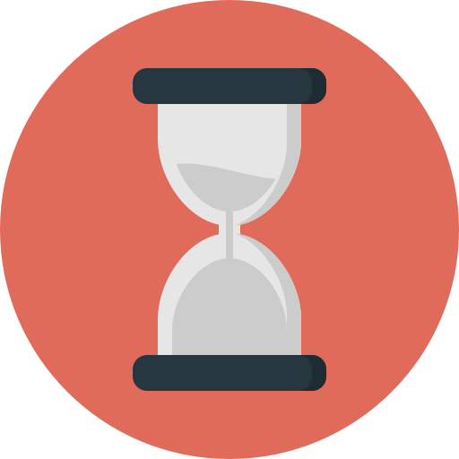

Realizar lo siguiente:
- Una barra de progreso centrada en la pantalla y que ocupe un 75% del ancho de la misma, que cumpla las siguientes condiciones:
- Tiempo total: 10 segundos
- Al 0% del tiempo: Color: azul - cargado: 0%
- Al 20% del tiempo: Color: azul - cargado: 75%
- Al 40% del tiempo: Color: naranja - cargado: 80%
- Al 60% del tiempo: Color: rojo - cargado: 5%
- Al 100% del tiempo: Color: verde - cargado: 100%
-
Debajo de la barra de progreso, centrado, poner un reloj de arena que gire indefinidamente, simulando una pantalla de carga.
